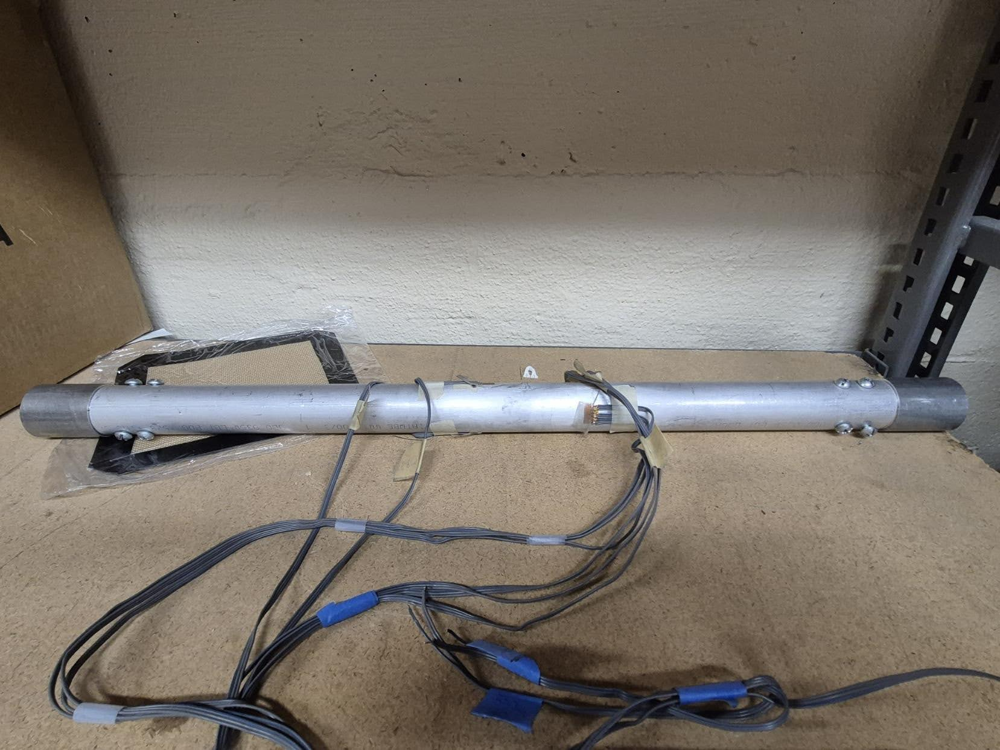
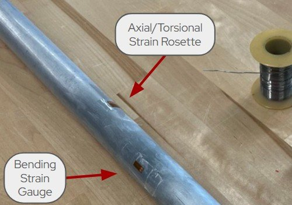
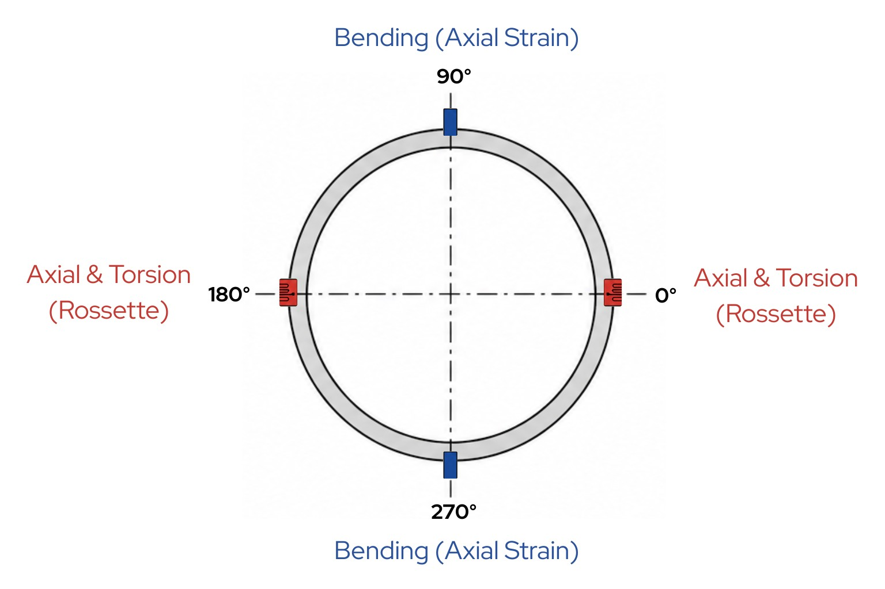
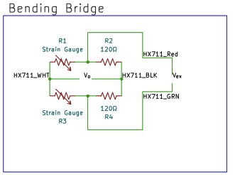
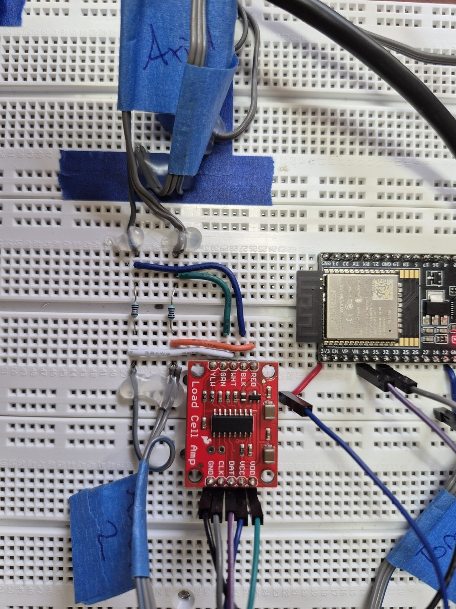
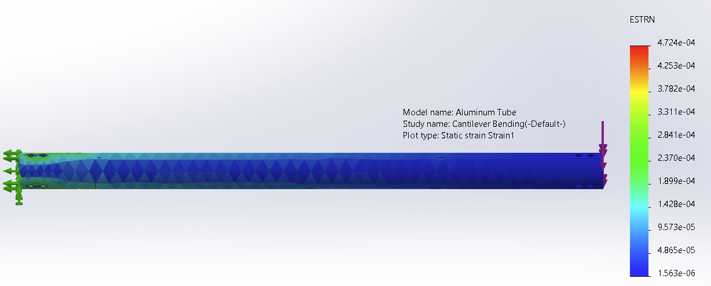
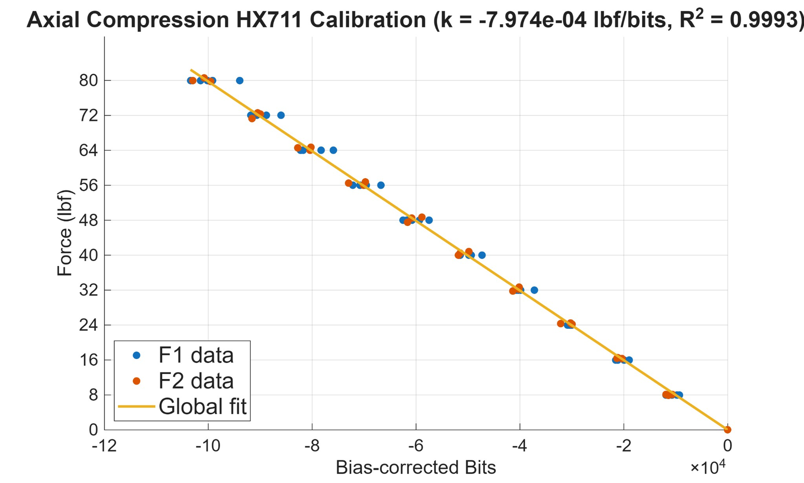
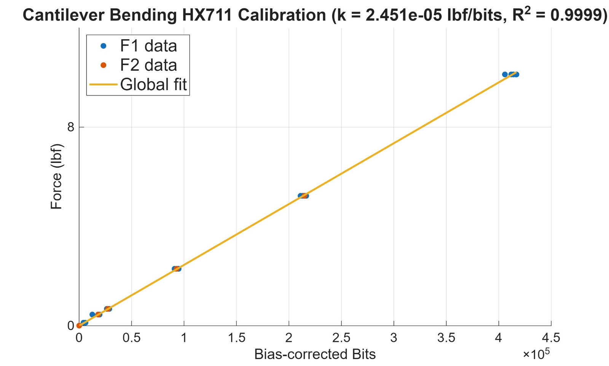
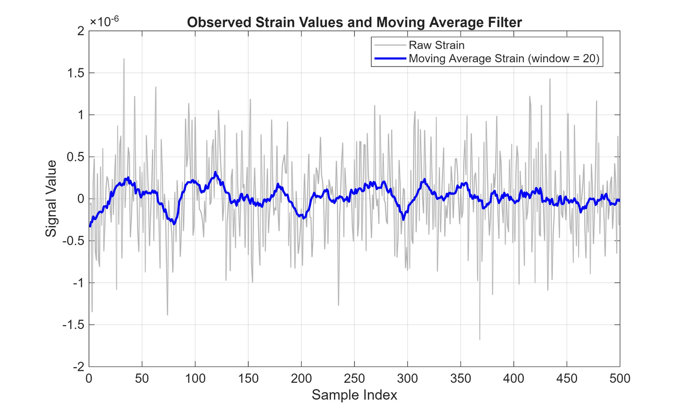

Mohr's Circle Demo Tool
Our senior design team built a teaching tool for stress transformation. Strain gauges on an aluminum tube feed an HX711 and an ESP32, and a MATLAB app redraws Mohr's circle as the load changes.
We wrote this phase up as an ASEE work-in-progress paper. Both papers are at the bottom of this page.
Overview
Stress transformation is hard to picture from a textbook, so this project builds something students can load by hand and watch. Our client teaches Mechanics of Materials at UW–Madison, a class of around 300 students, and wanted a device cheap enough (about $200 each) to give one to every five or six students.
Two earlier teams designed the MATLAB app and the handheld tool but never got the electronics working. Our job was to turn that into a real, instrumented prototype. The test piece is a 6061 aluminum tube with a 1.5 in outer diameter. We switched to it from the nylon the earlier teams planned on because gauges bond to aluminum much more reliably. Two triaxial rosettes pick up axial and torsional strain, and two uniaxial gauges at midspan pick up bending. For the calculations we treated the tube as a cantilever beam. The ESP32 zeroes the readings, filters them, and sends stress values over serial to the MATLAB app, which redraws Mohr's circle with every new reading.
My part
The hands-on instrumentation was my part. I practiced bonding strain gauges on scrap aluminum with the lab's instrumentation specialist before touching the real tube, then installed and soldered the gauges, built the bridges, and wired everything up. I drew the wiring schematics and redrew the board in KiCad after finding GPIO pin conflicts in the original design.
The signal chain took the most debugging. Our first version ran an AD627 amplifier into the ESP32's 12-bit ADC, and it kept drifting and losing bridge balance, so we switched to an HX711 24-bit ADC. I also ran the calibration and noise tests below.
Results
The design target was 1 microstrain of resolution. Using a conservative 6σ peak-to-peak measure on the filtered signal, the system reached 0.645 με. Calibration was very linear: R² = 0.9993 under axial load (0 to 80 lbf) and 0.9999 under cantilever bending (0 to about 10 lbf).
The calibration constants we measured came out 58% (axial) and 62% (bending) off from the hand calculations. That gap comes from using nominal gauge factor and bridge values, small errors in gauge placement and tube dimensions, and uncertainty in the aluminum's modulus. The system itself was consistent, so the fix is to use the measured constants. The measured noise floor was also about 50 times the HX711 datasheet figure, which we traced mostly to imperfect wire connections.
Three things are still left to do: torsion testing (the scaled-up tube didn't fit the lab's torsion machine), shrinking the electronics into the handheld housing, and a classroom study to see whether it actually helps students.
Images











Report / documentation
Final Paper
ASEE Paper